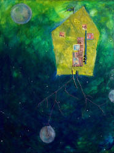

David Fuqua
The
Idea of Order at the Peabody Hotel
Miscegenating fathers stepped into
The gilt-edged ballroom with their debutante
Daughters to meet the world, as Louis Armstrong blew
His high perfect C and invented rhythms
Before and after the beat.
Later Greg Brown drifted down from Iowa
To growl his strange hillbilly blues
To wedding guests of a tycoonís
Spoiled rotten baby girl.
Having no suitable songs for young and proper ladies,
Regardless, on stage inventing their own
Rough sounds whether the drunken audience
Heard or not, neither played beyond the genius
That was him but played the genius that was him
In his time to the time and for it.
William Faulkner rode the train from Oxford
With his wife, sipping secret whiskeys
In the summer lobby, and watched who was who
Meet and show the makings of a world.
Tell me, Bill, did you imagine Popeye
In the cunning eyes of gentry from the Delta,
In town for bootleg and whores, and see there
Temple Drake wanting to be prized by men?
Scandalizing many proper folk not money
But the sexuality of it,
You kept the patina of your town intact,
And you came and went as you always did.
Down to me in the lobby with drinks
All legal and tourists there to see the show,
More crowded than it was meant to be,
Still the explosion of reds like worlds
Flying from the center of the massive
Ball of flowers atop the fountain,
A new universe forming
Is what it could be.
|

Drifting Toward the Edge
by Nancy Dunaway |
{kind=link}